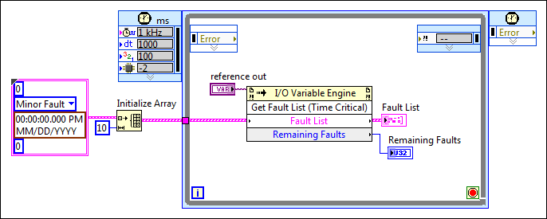

Method of I/O Variable Engine.
Returns a list of active faults on the target that you wire to the reference input. Use this method in time critical code. Use the Current Faults property when you need a list of active faults from code that is not time critical. Preallocate an array with the Fault List input of the same number of elements as the number of faults you need this method to return. If there are more active faults than the number of elements you preallocate, the Remaining Faults output returns the number of unlisted faults.
For example, in the following figure, the Initialize Array function preallocates an array of ten faults. The Get Fault List (Time Critical) method then returns up to ten active faults and the number of remaining faults.

| Name | Type | Direction |
|---|---|---|
| Fault List | 1D array of clusters | in |
| Remaining Faults | U32 | out |